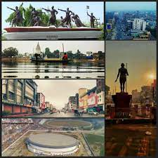
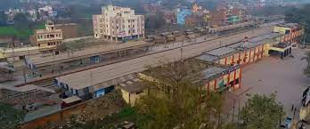
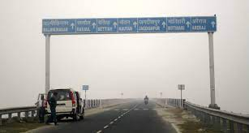
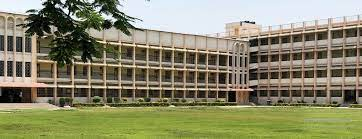
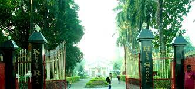

BETTIAH CITY

In 1244 A.D., Gangeshwar Dev, a Brahmin of "Jaitharia" clan, settled at Jaithar in Champaran.[5] One of his
descendants, Agar Sen, acquired large territory in the reign of Emperor Jehangir and was bestowed the title of
'Raja' by Emperor Shah Jahan. In 1659, he was succeeded by his son Raja Guj Singh, who built the palace of the
family at Bettiah. He died in 1694 A.D. The palace stands today but serves as marketplace.
In 1765, when the East India Company acquired the Diwani, Bettiah Raj held the largest territory under its
jurisdiction.[6] It consisted of all of Champaran except for a small portion held by the Ram Nagar Raj (also
held by Brahmin family).[6]
Maharaja Sir Harendra Kishore Singh was the last king of Bettiah Raj.[5] He was born in 1854 and succeeded his
father, the late Maharaja Rajendra Kishore Singh Bahadur in 1883. In 1884, he received the title of Maharaja
Bahadur as a personal distinction and a Khilat and a sanad from the hands of the Lieutenant Governor of Bengal,
Sir Augustus Rivers Thompson. He was created a Knight Commander of the Most Eminent Order of the Indian Empire
on 1 March 1889. He was appointed a member of the Legislative Council of Bengal in January 1891. He was also a
member of The Asiatic Society. He was the last ruler of Bettiah Raj. Maharaja Sir Harendra Kishore Singh Bahadur
died heirless on 26 March 1893, leaving behind two widows, Maharani Sheo Ratna Kunwar and Maharani Janki Kunwar.
There are a few institutions named after the queen Maharani Janki Kunwar, such as M.J.K College and M.J.K
Hospital. The Bettiah Gharana was one of the oldest style of vocal music.[7] Madhuban was part of the erstwhile
'Bettiah Raj'. Internal disputes and family quarrels divided the Bettiah Raj in course of time. Madhuban Raj was
created as a consequence.
GEOGRAPHY
Climate
The climate of Bettiah is characterised by high temperatures and high precipitation especially during the
monsoon season. The Köppen Climate Classification sub-type for this climate is "Cfa" (Humid Subtropical
Climate).
CONNECTIVITY
Railway

Bettiah Railway Station
Bettiah is connected to different cities of India through railways. Bettiah railway station is the main railway
station serving the city. Direct trains are available to all the major destinations across India like Patna,
Delhi, Mumbai, Kolkata, Guwahati, Ahemdabad, Lucknow, Jaipur, Jammu & Katra, etc.
Prajapati Halt railway station, also known as Bettiah Cant Railway station, is another railway station serving
the city.
Roadway

National Highway 727 , 139W , 28B, 727aa and State Highway 54 passes through the city.
The National Highway Authority of India (NHAI) has notified a new Patna-Bettiah road as National Highway 139W,
setting the state for construction of a high-quality four-lane road between the two towns that would reduce the
distance between them to 167 kilometres from the current 200-odd km and travel time to around two hours.[9]
Tola San Saraiyan new town aided village. The new Gopalganj-Bettiah Road passed through this new town aided
village. Through this new road a distance of 60 km (37 mi) become shorten for Gopalganj-Bettiah.
A New expressway is constructing via BETTIAH notified by NHAI which links Gorakhpur to Siliguri.
A direct NH is constructing to link Bettiah to Gorakhpur notified as 727aa. NH727AA connects Manuapul (Bettiah),
Patzirwa, Paknaha, Pipraghat and Sevrahi in the states of Bihar and Uttar Pradesh.
Airway
The nearest airport is Kushinagar International Airport which is about 97 km (60 mi) from Bettiah. The nearest
airport in bihar is Jay Prakash Narayan International Airport located in Patna which is about 200 km (120 mi)
via Muzaffarpur and 177 km (110 mi) via areraj.
EDUCATION
schools


1.Alok Bharati Shikshan Sansthan English Medium School, Bettiah.
2.Amna Urdu High School, Bettiah.
3.Assembly of God Church School, Bettiah.
4.Bipin High School, Bettiah.
5.Delhi Public School, Bettiah.
6.Jawahar Navoday Vidyalaya, Vrindavan, Bettiah.
7.Kendriya Vidyalaya, Bettiah.
8.Khrist Raja High School, Bettiah.
9.Kidzee Play School, Bettiah[16]
10.Krishna International Public School, Bettiah.
11.National Public Higher Secondary School, Bettiah.
12.Notre Dame Public School, Bettiah.
13.Raj Enter Secondary School, Bettiah.
14.R.L international School, Bettiah.
15.S.S. Girls High School, Bettiah.
16.Sacred Heart High School, Bettiah.
17.Sarsawati Vidya Mandir, Bettiah.
18.St. Joseph’s School, Bettiah.
19.St. Mary/Remijius High School, Bettiah.
20.St. Michael’s Academy. Bettiah.
21.St. Teresa's Girls' Senior Secondary School, Bettiah.
22.St. Xavier's Higher Secondary School, Bettiah.
COLLEGES
1.Government Medical College, Bettiah.
2.Government Engineering College, West Champaran.
3.Government Polytechnic,West Champaran.
4.Maharani Janki Kunwar College, Bettiah.
5.Ram Lakhan Singh Yadav College, Bettiah.
6.Gulab Memorial College, Bettiah.
7.MRRG College, Bettiah.
8.MNM Mahila College, Bettiah.
9.St. Teresa Primary Teachers Training College, Bettiah.
10.Chanakya College of Education, Bettiah.
11.Raj Inter College, Bettiah.
STARTUP ZONE IN BETTIAH

Introduction
As per the reports of WHO, COVID-19 put the whole world in an unprecedented crisis and lingering uncertainty,
generalized economic depression, unemployment, Quarantine, unavoidable Lockdown & travel-ban that was imposed
globally as a necessity to tackle the pandemic. Among the populace, the migrants were found to be one of the most
vulnerable groups in this lockdown, as their very livelihood came to a complete standstill. COVID-19 brought about a
massive change to the existing systems and generated This eventually created verwhelming fear and mounting anxiety
among the people due to the novelty of the crisis & the uncertainty it brought with it. The COVID-19 Lockdown,
imposed to tackle the pandemic & to rein in its outspread, has turned the economy into a new situation of “Reverse
Migration” in which people returned back from the working place to the Native place. From Decades, going to other
states for better economic prospect has been a way of life in West Champaran District. Hence, this District also
received large number of returnees who had the pressing need to head back home in an unprecedented crisis. They
returned back from various parts of India e.g., Surat, Ludhiana, Amritsar, Mumbai, Delhi, Chandigarh, Kerala,
Tamilnadu, Karnataka etc. & abroad like Dubai, Qatar, with lost livelihood & in a state of distress, after the
nationwide Lockdown imposed in the year 2020 to contain the spread of COVID-19. Returnees were afraid of going back
& wanted to get their Livelihood here as a number of them had bitter experience with their employers as well as the
uncertainty & Fear COVID-19 brought with it. It is said that- “unprecedented time requires unprecedented measures.”
“Navpravartan” Startup Zone, Chanpatia provided an innovative solution to the plight of returnees who faced grave
financial & psychosocial crisis and lost their livelihood due to the unprecedented calamity of COVID-19.
The move of Setting up of the “Navpravartan” Startup Zone, Chanpatia in West Champaran District is an Innovative and
Transformational step towards realizing the true potential of these returnees, providing them Livelihood solutions
near to home, fueling economic growth of the District by Bulk production Model using latest technologies, generating
employment, nurturing entrepreneurial Ecosystem & providing an efficient public service delivery system leading us
to the goal of “AtmaNirbhar Bharat”.